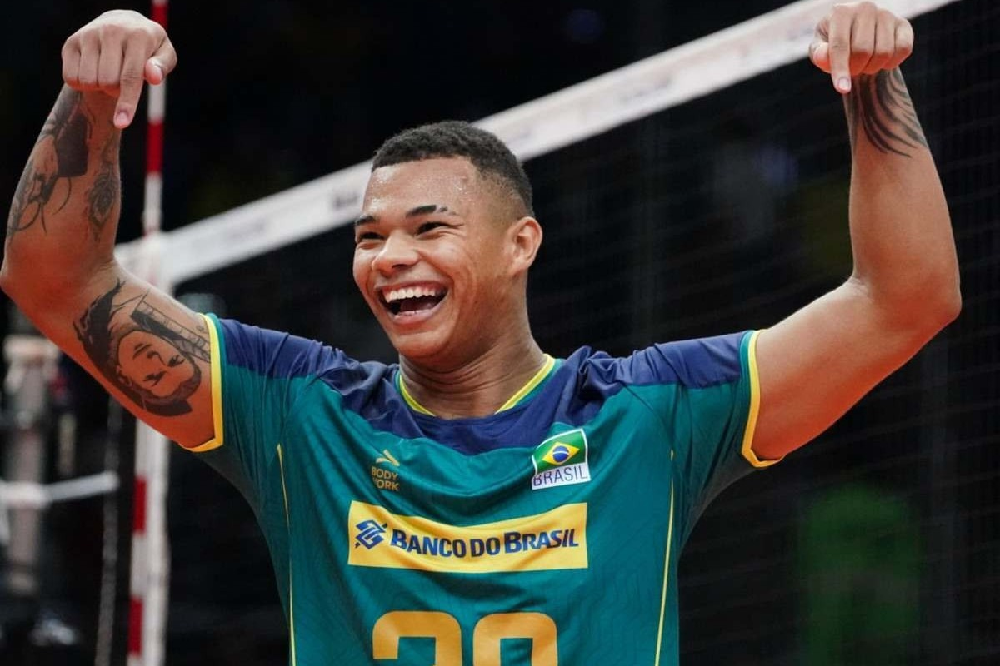

-
Rebeca Andrade
Aos 25 anos de idade, a natural de Guarulhos-SP, já é campeã olímpica no salto (2022), bicampeã mundial no salto (2021, 2023) e campeã mundial individual geral de 2022. É uma das principais esperanças de medalha para o Brasil em Paris.
-
Rayssa Leal

A "Fadinha do Skate", como é conhecida, tem 16 anos e é a mais jovem medalhista olímpica do Brasil, com a medalha de prata. Esse ano, numa disputa emocionante, foi bronze em Paris.
-
Darlan
O nosso jovem oposto da Seleção Brasileira de Voleibol ganhou o coração da torcida no pré-olimpico que ocorreu no Brasil. Com seus 22 aninhos ele vem dando o que falar, com seus 1.93 de altura e alcando humildes 3,63m (lembrando que a rede tem 2,43m).